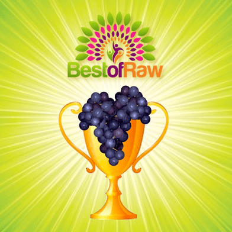

Best of Raw 2013 – We Won!

This is so cool, can you believe it? We won the 2013 Best of Raw for an On-line Blog! Wheeeeeee. So here is a special send out and thank you to each and every of you who voted for us. I so love the community that has grown up around my site over the years. :) It has really blossomed into something that I really can’t wrap my head around. :)
I don’t know if you have any idea what it means to me to surrounded by such supportive and like-minded people. YOU are the fuel that feeds my passion, and for that, I am so grateful (and so is Bob’s full belly haha).
Just for fun here are some facts about NouveauRaw. Did you know…
NouveauRaw was formed in 2008 mostly as a place for me to organize my recipes, and to share them with friends and family.
We now have 4,668 subscribers!
It has been viewed in 144 countries.
I have posted 879 recipes! OMG!
Last month we had 527,648 page views.
And 48,000 unique (different) visitors.
All I can say is WOW… it humbles me to think that as I scamper around my little kitchen, dropping spatulas covered with sticky almond butter on the floor, getting key lime pie batter spattered in my face, dropping measuring spoons in my running food processor, or watching a tray of kale chips tumble to the floor as I carry them to the dehydrator…. And while all that is going on, I have my extend raw family sneaking peeks at my creations. How amazing is that?!
Again, from the bottom of my heart, thank you so much.
Amie Sue
© AmieSue.com